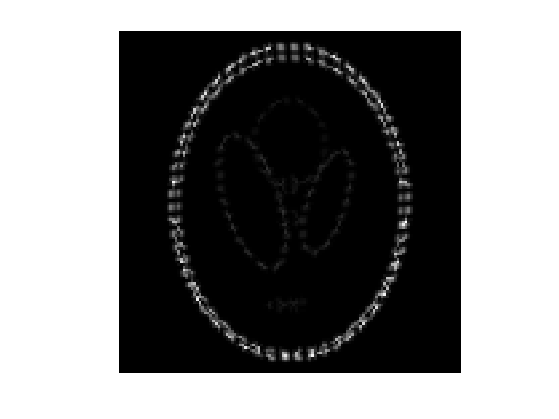
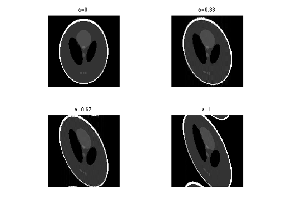
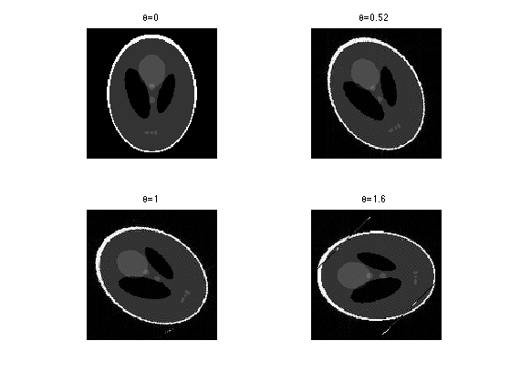
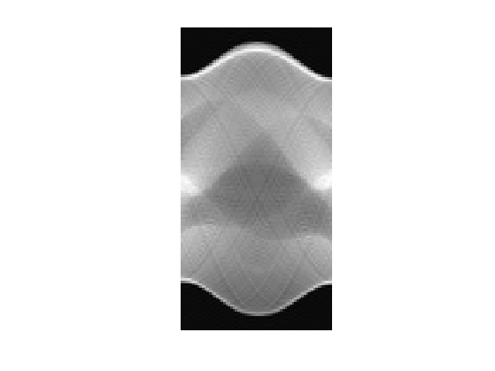
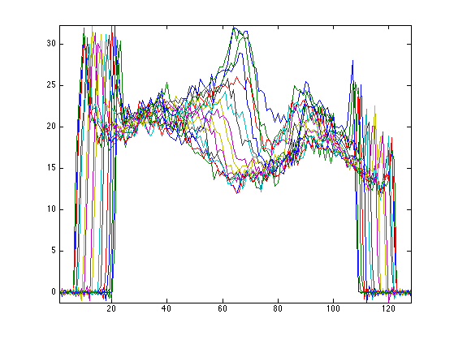
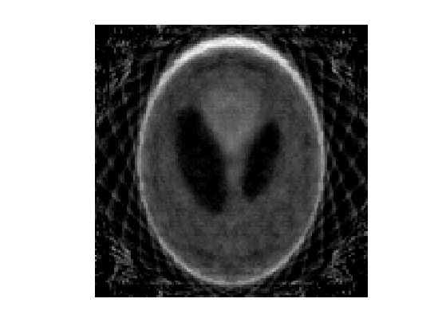

Reconstruction from Partial Tomography Measurements
This numerical tour explores the reconstruction from tomographic measurement with TV regularization.
Contents
Installing toolboxes and setting up the path.
You need to download the following files: signal toolbox and general toolbox.
You need to unzip these toolboxes in your working directory, so that you have toolbox_signal and toolbox_general in your directory.
For Scilab user: you must replace the Matlab comment '%' by its Scilab counterpart '//'.
Recommandation: You should create a text file named for instance numericaltour.sce (in Scilab) or numericaltour.m (in Matlab) to write all the Scilab/Matlab command you want to execute. Then, simply run exec('numericaltour.sce'); (in Scilab) or numericaltour; (in Matlab) to run the commands.
Execute this line only if you are using Matlab.
getd = @(p)path(p,path); % scilab users must *not* execute this
Then you can add the toolboxes to the path.
getd('toolbox_signal/'); getd('toolbox_general/');
Width \(n\) of the image.
n = 128;
We first load an image.
name = 'phantom';
f0 = load_image(name, n);
Rotation over the Spacial Domain
Given an image \(f\), its rotation is defined by rotating the pixels locations \[ R_\th(f) = f(R_{-\th}(x) \] where we have use the same notation \(R_\th\) for the 2-D linear operator defined by the matrix \[ R_\th = \begin{pmatrix} \cos(t) & -\sin(t) \\ \sin(t) & \cos(t) \end{pmatrix} \]
Computing rotation \(R_\th(f)\) over a discrete grid requires interpolation.
t = linspace(-1,1,n);
[Y,X] = meshgrid(t,t);
rotation = @(f,t)interp2(Y,X,f, sin(t)*X + cos(t)*Y, cos(t)*X - sin(t)*Y, 'cubic', 0);
Rotation Over the Fourier Domain
A difficulty with spine-based rotation is that the corresponding operator is not exactly orthogonal.
In particular, one does not have \(R_{-\th} = R_{\th}^{-1}\).
clf; imageplot(abs(rotation(rotation(f0,.2),-.2)-f0));
To circunvent this problem, one can define the rotation using a Fourier-domain interpolation (a.k.a. Shannon). This is easily performed by decomposing a rotation as a series of shears which can themselves be implemented as diagonal operator over the Fourier domain.
X-aligned and Y-aligned shear matrices are defined as \[ S_a^x = \begin{pmatrix} 1 & a \\ 0 & 1 \end{pmatrix} \qandq S_a^y = \begin{pmatrix} 1 & 0 \\ a & 1 \end{pmatrix} \]
One has the following decomposition of a rotation matrix as a product of shears matrices : \[ R_\th = S_{-\tan(t/2)}^x \circ S_{\sin(t)}^y \circ S_{-\tan(t/2)}^y. \]
If we consider continuous functions defined over the plane \(x \in \RR^2\) and define the Fourier transform along the X-direction as \[ \hat f(\om,x_2) = \int f(x_1,x_2) e^{-i \om x_1} d x_2 \] one can compute the shear transformed function \[ f_a(x) = f( S_{-a}(x) ) \] as a diagonal operator over the Fourier domain \[ \hat f_a(\om,x_2) = e^{i \om x_2} \hat f(\om,x_2). \]
By analogy, we define the shear transform of a discrete image as a diagonal operator over the Fourier domain. Remark: to ensure that the transform is reald-valued, one should be careful about how to handle the highest frequency \(n/2\), otherwise the transform would be complex-valued. Note also that this is an orthogonal transform (the eigenvalues have unit modulus).
t = [0:n/2-1 0 -n/2+1:-1]'; [Y,X] = meshgrid(t,t); shearx = @(f,a)real( ifft( fft(f) .* exp(-a*2i*pi*X.*Y/n) ) ); shearx = @(f,a)fftshift(shearx(fftshift(f),a)); sheary = @(f,a)shearx(f',a)';
Exercice 1: (check the solution) Display the effect of shearing \(S_a^x\) for several values of shear \(a\).
exo1;
By analogy to the continuous setting, we define a discrete rotation by decomposing it using a series of shear.
rotation = @(f,t)shearx( sheary( shearx(f,-tan(t/2)) ,sin(t)) ,-tan(t/2));
Exercice 2: (check the solution) Display the effect of rotations \(R_\th\) for several values of angles \(\th\).
exo2;
To avoid issues when using large angles, we replace a rotation of angle \(\th\) by 4 rotations of angle \(\th/4\). Note that this makes computation slower.
rotation = @(f,t)rotation(rotation(f,t/2),t/2); rotation = @(f,t)rotation(rotation(f,t/2),t/2);
Exercice 3: (check the solution) Display the effect of rotations \(R_\th\) for several values of angles \(\th\).
exo3;
We check that this discrete rotation operator is exactly invertible, \(R_{\th}^{-1} = R_{-\th}\).
theta = .2; e = norm( rotation(rotation(f0,theta),-theta)-f0 ); disp(['Error (should be 0): ' num2str(e, 2) '.']);
Error (should be 0): 1.3e-14.
We check that the inverse is also the adjoint operator, \(R_{\th}^{-1} = R_{\th}^* = R_{-\th}\).
theta = .1; a = randn(n); b = randn(n); dotp = @(a,b)sum(a(:).*b(:)); e = dotp(a,rotation(b,theta)) - dotp(b,rotation(a,-theta)); disp(['Error (should be 0): ' num2str(e, 2) '.']);
Error (should be 0): 6.8e-13.
Partial Radon Operator
The Radon transform is defined, for an angle \(\th \in [-\pi/2,\pi/2)\) as an integration along all lines of angle \(\th\). It can thus be defined equivalently by 1-D vertical integration of the image rotated by an angle \(\th\). We use here a simple sum to replace the continuous integration: \[ \Phi_\th(f)(x_1) = \sum_{x_2} R_\th(f)(x_1,x_2). \]
The radon transform is defined as the collection of projections for several angles, \(\{ \th_i \}_{i=1}^{m}\), usually equi-spaced in \([-\pi/2,\pi/2)\). \[ \Phi(f) = \{ \Phi_{\th_i}(f) \}_{i=1}^m \in \RR^{n \times m}. \]
For \(y = \{y_{i}\}_{i=1}^m \in \RR^{n \times m}\), where \(y_i \in \RR^n\), the adjoint of the Radon transform is \[ \Phi^*(y) = \sum_i R_{-\th_i}(U(y_i)), \] where \( U : \RR^n \rightarrow \RR^{n \times n} \) replicates the vector along the lines, \(U(v)(x_1,x_2)=v(x_1)\).
Number of angles for the partial tomography.
m = 64;
List of angles.
tlist = linspace(-pi/2,pi/2, m+1); tlist(end) = [];
Define the operators \(\Phi\) and \(\Phi^*\)
Phi = @(f)perform_radon_transform(f, tlist, +1, rotation); PhiS = @(R)perform_radon_transform(R, tlist, -1, rotation);
Display a Radon transform.
clf; imageplot(Phi(f0));
Check that \(\Phi^*\) is indeed the adjoint of \(\Phi\).
a = randn(n,m); b = randn(n); e = dotp(a,Phi(b)) - dotp(PhiS(a),b); disp(['Error (should be 0): ' num2str(e, 2) '.']);
Error (should be 0): -1.6e-12.
Partial Tomography Pseudo-Inversion
We consider here a coarse sub-sampling of the Radon transform.
m = 16; tlist = linspace(-pi/2,pi/2, m+1); tlist(end) = []; Phi = @(f)perform_radon_transform(f, tlist, +1, rotation); PhiS = @(R)perform_radon_transform(R, tlist, -1, rotation);
We use noiseless measurements \(y=\Phi f_0\).
y = Phi(f0);
Display the corresponing 1-D projections.
clf;
plot(y); axis tight;
 The pseudo inverse reconstruction is defined as \[ \Phi^+ y = \Phi^* ( \Phi\Phi^* )^{-1} y. \] It is the minimum \(L^2\) norm reconstruction \[ \Phi^+ y = \uargmin{ f} \norm{y-\Phi f}^2. \]
Remark: When \(m\) tends to infinity (continuous set of angles), the Radon transform is not sub-sampled and \( \Phi \Phi^* \) is a filtering. For \(y(r,\th)\) a continuous set of Radon coefficients, \[ (\Phi\Phi^*) y(r,\th) = \int y(s,\th) h(r-s) d s \qwhereq \hat h(\om) = 1/\abs{\om}. \] When \(m\) is large enough, it is common to approximate \(\Phi^+\) using \[ \Phi^+ R = \Phi^*( g \star y ) \] where \(g\) is a 1-D filter with \(\hat g(\om) = \abs{\om}\) and \(\star\) is the convolution along the first coordinate of the Radon coefficients.
This is not the case in our setting, so that \( \Phi \Phi^* \) is actually difficult to invert, and it is thus computaitonaly difficult to compute the exact pseudo inverse \(\Phi^+ = \Phi^* (\Phi \Phi^*)^{-1} \).
Exercice 4: (check the solution) Compute the pseudo inverse reconstruction using a conjugate gradient descent (function cgs).
exo4;
Partial Tomography Total Variation Inversion
We consider the following reconstruction \[ \umin{\Phi f = y} J(f) \qwhereq J(f)=\norm{\nabla f}_1\] where the \(\ell^1\) norm of a vector field \((u_i)_i\) is defined as \[ J(f) = \sum_i \norm{u_i}. \]
WORK in PROGRESS
return;
This problem is rewritten as \[ \umin{f} F(K(f)) + G(f) \] where \(G=0\), \(Kf = (\Phi f, \nabla f)\) and \(F(u,v)=i_{\{y\}}(u) + \norm{v}_1.\)
The primal-dual algorithm reads: \[ g_{k+1} = \text{Prox}_{\sigma F^*}( g_k + \sigma K(\tilde f_k) \] \[ f_{k+1} = \text{Prox}_{\tau G}( f_k-\tau K^*(g_k) ) \] \[ \tilde f_{k+1} = f_{k+1} + \theta (f_{k+1} - f_k) \]
One has \[ \text{Prox}_{\la F}(u,v) = \pa{ y, \text{Prox}_{\la \norm{\cdot}_1}(v) } \] where \[ \text{Prox}_{\la \norm{\cdot}_1}(v)_k = \max\pa{0,1-\frac{\la}{\norm{v_k}}} v_k \]
Amplitude = @(u)sqrt(sum(u.^2,3)); F1 = @(u)sum(sum(Amplitude(u))); u = @(z)reshape(z(1:n*m),n,m); v = @(z)reshape(z(n*m+1:end),n,n,2); ProxF1 = @(u,lambda)max(0,1-lambda./repmat(Amplitude(u), [1 1 2])).*u; ProxF = @(z,lambda)[y(:); reshape(ProxF1(v(z),lambda),n*n*2,1) ]; ProxFS = @(y,sigma)y-sigma*ProxF(y/sigma,1/sigma); ProxG = @(x,lambda)x; K = @(f)[reshape(Phi(f),n*m,1); reshape(grad(f), n*n*2,1)]; KS = @(z)PhiS(u(z)) - div(v(z));
We set parameters for the algorithm. Note that in our case, \(L=\norm{K}^2=n m\). One should has \(L \sigma \tau < 1\).
L = n*m; sigma = 10; tau = .9/(L*sigma); theta = 1; f = fL2; % zeros(n); g = K(f)*0; f1 = f; niter = 100; E = []; C = []; F = []; for i=1:niter % update fold = f; g = ProxFS( g+sigma*K(f1), sigma); f = ProxG( f-tau*KS(g), tau); f1 = f + theta * (f-fold); % monitor the decay of the energy E(i) = F1(grad(f)); F(i) = norm(y-Phi(f), 'fro'); C(i) = snr(f0,f); end clf; h = plot(E); set(h, 'LineWidth', 2); axis('tight');